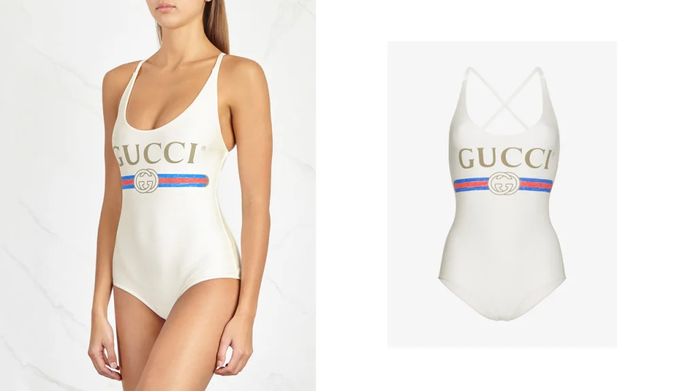

Top 3 Designers in the World:
Coco Chanel
Gabrielle Bonheur "Coco" Chanel was a successful businesswoman and fashion designer from France. The founder and namesake of the Chanel company, she is credited with popularising sporty, casual chic as the feminine standard of style in the years following World War I. This replaced the previously prevalent "corseted silhouette" with a design that was easier, much quicker to put on and take off, more comfortable, and less expensive, all without sacrificing elegance. On Time magazine's list of the 100 most influential people of the 20th century, she is the only fashion designer included. A renowned fashion designer, Chanel realised her aesthetic design in jewellery, handbags, and scent, expanding her influence beyond luxury apparel.
Tom Ford
The French fashion designer Yves Henri Donat Mathieu-Saint-Laurent, also known as Yves Saint-Laurent or YSL, was born on August 1, 1936, and died on June 1, 2008. He is regarded as one of the most important 20th-century fashion designers. In 1985, Caroline Milbank stated, "Yves Saint Laurent may be credited for both stimulating the couture's rise from its 1960s ashes and with ultimately rendering ready-to-wear credible. He is the most continuously renowned and influential designer of the previous 25 years." He evolved his look to suit the alterations in trend at the time. He took a new approach to his design by attempting to instil confidence in ladies by seeming simultaneously casual and chic.
Christian Dior
Christian Ernest Dior, who was born on January 21, 1905, and died on October 24, 1957, was a French fashion designer best known for founding Christian Dior SE, one of the most prestigious fashion houses in the world. Christian Dior SE is now owned by parent firm LVMH. Particularly "on five continents in barely a decade," his fashion houses are well-known throughout the entire world. Due to his artistic abilities, Dior was hired by and designed for a number of well-known fashion icons in an effort to keep the fashion business alive during World War II. After the war, he developed and launched the Dior fashion firm. His "New Look" collection revolutionised women's clothing and helped make Paris once again the centre of the fashion industry.
List of the Most Popular Designer Items
- 1. Gucci GG Logo Belt
- 2. Fila Disruptor II Sneakers
- 3. Gucci logo-print swimsuit
- 
- 4. Prada nylon and leather belt bag
- 5. Jacquemus Saudade dress
- 6. Off-White ℅ Virgil Abloh industrial belt
- 7. Chanel canvas cap-toe espadrille flats
- 8. Céline Edge sunglasses
- 9. Goat Whitney Dress
- 10. Balenciaga platform Crocs